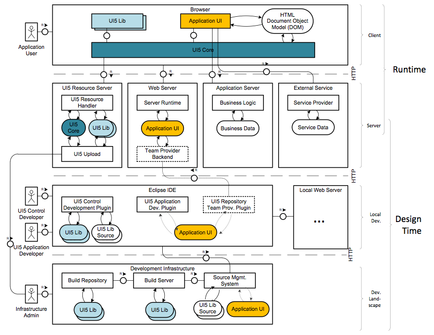

SAPUI5 Security Information
Introduction
Security With SAPUI5
This guide covers security aspects of the usage of SAPUI5. It is targeted to SAPUI5 application and control developers as well as to system administrators running applications based on SAPUI5.
It is important to understand that SAPUI5 is a clientside JavaScript library, so while the library itself is designed and tested to be secure, it can not ensure the application to be secure. Unlike Web Dynpro, where the application is built against an abstract programming model and the framework handles all the HTML rendering, JavaScript code and communication with the browser, in SAPUI5 the application controls the HTML output, it provides own JavaScript code which is executed on the client and it handles client/server communication.
While this brings a lot of freedom and possibilities for the application, it comes with a lot of responsibility with regards to security. Application developers need to understand the security threats and actively prohibit exploitation. Also the correct configuration of the HTTP server which is used is important.
This also means common security mechanisms, which are taken for granted, like User Authentication, Session Handling, Authorization Handling or Encryption are not part of SAPUI5 and need to be handled by the server side framework and/or custom code of the application.
Why Is Security Necessary?
With the increasing use of distributed systems and the Internet for managing business data, the demands on security are also on the rise. When using a distributed system, you need to be sure that your data and processes support your business needs without allowing unauthorized access to critical information. Protection of the user’s personal data must be guaranteed and legal regulations regarding this must be complied with. User errors, negligence, or attempted manipulation on your system should not result in loss of information or processing time. These demands on security apply likewise to SAPUI5 . To assist you in securing SAPUI5, we provide this Security Guide.
About this Document
The security guide comprises the following main sections:
- Before You Start Links to general security guides
- Architectural Overview How SAPUI5 is embedded and interfacing with the application
- Browser Security Client related security aspects
- Transport Security Security of data transport between client and server
- Server Security Serverside security considerations with SAPUI5
- Third Party Libraries jQuery and datajs are part of SAPUI5
- Secure Programming Guide What needs to be done in the application
- Using the SAPUI5 Repository based on BSP Repository
Before You Start
SAPUI5 is not bound to any server implementation or serverside programming language, so can be used with Netweaver ABAP, Java, HANA XSEngine or any standard web server. Therefore, the corresponding Security Guides also apply to SAPUI5.
Fundamental Security Guides
Please also refer to the global and other security guides of involved technologies and platforms.
Additional Information
For more information about specific topics, see the Quick Links as shown in the table below.
| Content | Quick Link on the SAP Service Marketplace or SDN |
| Security | http://sdn.sap.com/irj/sdn/security |
| Security Guides | http://service.sap.com/securityguide |
| Related SAP Notes | http://service.sap.com/notes |
| http://service.sap.com/securitynotes | |
| Released platforms | http://service.sap.com/pam |
| Network security | http://service.sap.com/securityguide |
| SAP Solution Manager | http://service.sap.com/solutionmanager |
| SAP NetWeaver | http://sdn.sap.com/irj/sdn/netweaver |
Architectural Overview
SAPUI5 is a JavaScript library based on jQuery. It is embedded in the application using a script-tag and triggers additional requests for on-demand-loading of JavaScript classes, stylesheets and other resources. For Java and ABAP a special resource handler is offered, which provides extended capabilities, and is used for all SAPUI5 internal requests.
The application usually has a serverside part and a clientside part. The serverside part can be based on any web framework, the clientside part is a web application, which is utilizing SAPUI5 for its user interface.

Data Protection and Privacy
SAPUI5 does not store or provide access to any person-related data. If an application built with SAPUI5 deals with person-related data, it has to take care of the data protection rules of the target countries of the application. This includes usage of proper authentication, authorization and encryption (e.g. SSO and usage of https), as well properly securing and logging access to person-related data. For more inforamtion regarding data protection and privacy, please see the security guide of your server side framework.
Browser Security
First of all, the browser is an untrusted client by design. The server can not rely on any information sent from the browser, as a malicious user can use a JavaScript debugger to tamper with the client code or a proxy server like fiddler to modify request data. All input validation on the client is just for convenience, the server always has to validate all the data coming from the client again.
The browser also offers some possible attack vectors, especially Cross-Site-Scripting (XSS), which has to be taken care of by the application.
Cross-Site-Scripting
Cross-Site-Scripting is the most prominent security issue of web applications within the last years and also the mosts dangerous one, as it allows so many ways of exploitation. Once malicious code is running within your browser, it can be used to steal your session cookies, to trigger requests within the current session, or even to exploit a known browser vulnerability to do native code execution.
For SAPUI5 applications XSS vulnerabilities can exist on different levels:
- Within the HTML page or custom data transports sent to the browser from the server
- Within the JavaScript Code of the application, which is processing server responses
- Within the HTML renderers of SAPUI5 controls
SAPUI5 can only prevent cross site scripting in the processing and rendering of controls. For that purpose there is input validation on all typed Element properties and output encoding done in the renderer class of Controls (see Secure Programming Guide for Control Developers). Please be aware that there are exceptions to this, for controls which are especially built to include arbitrary HTML (like sap.ui.core.HTML).
Application is responsible for proper output encoding of all content embedded into the HTML page itself, as well as for encoding of JSON or XML data sent to the client and secure processing of this data. Of course the application also has to take care of security of custom controls provided by the application.
HTML5
HTML5 offers a lot of new functionality which also brings a lot of potential new security issues. This just an overview of some of the new features and possible security issues when they are used.
Local Storage
All browsers are now offering a local storage API. This API can be used to store a limited amount of data on the browser. Access to this data is limited to JavaScript code running from the same domain as it has been stored. SAPUI5 offers helper functions to access the local storage on different browsers.
The local storage of browsers is not a secure storage, so while it can be used for static data, like enumerations, applications must not store any user or application data within the local storage.
By default SAPUI5 is not using the local storage, but it can be enabled for the history-capability of Dropdown- and ComboBoxes for uncritical data.
WEBGL
While more and more browsers are supporting WEBGL by default, WEBGL allows accessing the graphics API of the computer on a very low level, which may also lead to low level exploits. This is the main reason Internet Explorer has no support for WebGL at all, Microsoft recently stated, that they are not going to support WebGL as they think it can not be implemented in a secure way.
SAPUI5 is currently not using WEBGL.
WebSockets
While WebSockets offer great new possibilities for the client/server communication of web applications, there have been many security issues rising while the first implementations were done by the browser vendors. Standardization of WebSockets has reached a stable state with RFC 6455 and is now implemented beginning with Chrome 16, Firefox 11 and Internet Explorer 10. Even if the browser implementations themselfes prove to be secure, using Web Sockets may require additional security measures on the client.
SAPUI5 is currently not using WebSockets.
postMessage/onMessage
This is another great feature in the HTML5 area, which can lead to massive security issues, when not used correctly. postMessage allows inter-window-communication between windows from different domains. So basically this opens a hole in the same origin policy currently implemented in the browser. As soon you are subscribing to the onMessage event, you can receive messages from any other browser window, the application is responsible to check the originating domain and only to process messages which have been sent by trusted domains.
SAPUI5 is utilizing postMessage for its debugging and tracing functionality.
Transport Security
Of course the best security on the client and server doesn't help, if the data transport between client and server can be read, intercepted or even modified by an attacker. Per default HTTP communication is stateless and unencrypted, which makes it necessary to configure it in a way that it is using encrypted connections and to add session handling on top using either cookies or URL rewriting.
Encryption
Sending the HTTP protocol over a SSL secured connection is not only standardized, but also required for SAP applications.
SAPUI5 fully supports usage of HTTPS, but there are some restrictions regarding the CDN version of SAPUI5 when HTTPS is used. It is recommended to enable or at least to test SSL connections in an early stage of application development, as usually switching to HTTPS causing some issues. First of all, when the application is started using HTTPS, the SAPUI5 library also has to be loaded from an HTTPS server. Second Internet Explorer 8 and 9 have some additional restrictions regarding cross origin requests with HTTPS, which are related to the security zone concept.
Session security
Even if the data transport is secured using SSL, there are possibilities to hijack such a secure connection and sending malicious requests from the client. Cross site request forgery and session fixation are two of the prominent examples of this class of attacks.
SAPUI5 does only provide XSRF prevention for the data which is sent to the server by SAPUI5. Currently this only happens in the OData Model, where a XSRF token is read from the server and used for subsequent write requests.
Application is responsible for using XSRF header or other mechanisms to prevent XSRF for all other server communication triggered by the application.
Server Security
SAPUI5 only ships a small serverside part, to support loading of resources by the client framework. Usage of the resource handlers is not mandatory, SAPUI5 also offers a static version of the libraries, which can be used with an arbitrary HTTP server.
Cross Origin Resource Sharing
Usually the XMLHttpRequest for security reasons does only allow accessing resources from the same domain as the originating document. As their are a lot of web based services available today, starting with RSS or Atom feeds, WebServices or OData services, there was a need to be able to also access data sources from different domains within the browser, which was adressed with the CORS (Cross Origin Resource Sharing) standard. This allows the server to set special headers on their responses, which are telling the XMLHttpRequest object, whether it is allowed to process the requested data or not.
This CORS capability also plays an important role in SAPUI5 based applications. In case the application itself and the data visualized are coming from different servers, the CORS header has to be configured correctly on the data providing server, to allow the application server domain to access the data.
SAPUI5 is using CORS header on its CDN based library, to be able to load additional scripts, styles and resources from the CDN server.
Resource Handler (Java)
The Resource Handler for Java provides some configuration options (context parameters in the web.xml). It is possible to enable CORS, configuring the cache control and activating a development mode. Details about the configuration options can be found here: Resource Handling.
In case of productive usage of the Resource Handler you must not have the development mode activated. You have to remove the configuration option com.sap.ui5.resource.DEV_MODE in the web.xml.
Resource Handler (ABAP)
The Resource Handler for ABAP is not configurable. It is used to serve the resources from the mime repository.
Resource Handler for Application Resources (ABAP, NW 7.X)
The Resource Handler for Application Resources for ABAP, NW 7.X is not configurable. It is used to serve the resources from the SAPUI5 Repository based on BSP Repository, see also Executing SAPUI5 Applications from the SAPUI5 Repository
Proxy Servlet (Java)
SAPUI5 is providing a SimpleProxyServlet. This proxy servlet can be used on a local server only for local requests to access data from other domains. This is useful to avoid cross domain issues when fetching data from another domain for testing purposes. Also for the SAPUI5 tools this is required since the local testing needs to access data from the remote ABAP server. Due to security reasons this proxy servlet is limited to localhost usage only and cannot be used by requests from other domains.
Third-Party Libraries
Libraries shipped with SAPUI5
SAPUI5 ships with a handful of third party libraries. jQuery is mandatory as SAPUI5 is based on it and datajs is needed in case OData services should be used.
jQuery
jQuery does not have any security related documentation on their site, but they are known to be aware of security and usually reacting quickly in case security issues are found within their library.
SAPUI5 is including jQuery in different versions together with their own libraries, so also has the possibility to add custom security fixes to jQuery, if necessary.
datajs
datajs does not have any security related documentation on their site.
SAPUI5 is including the datajs library and can add custom security fixes, if necessary.
Libraries included by the application
Applications based on SAPUI5 are allowed from a technical point of view to include arbitrary custom libraries within their application. Of course SAPUI5 can not give any statement about the security of third party libraries and can not ensure security of third party libraries. The application has full responsibility for doing an security assessment of third party libraries before using them and for embedding and using them in a secure manner.
Secure Programming Guide
Input Validation
Application point of view: Input validaton of user input, must be done on the server, optional on the client, can be achieved using two way data binding and model types. The application can create custom types by extending the SimpleType? class. This is explained in more detail in the databinding documentation.
- oInput.bindValue("/path", new sap.ui.model.type.Float()) Ensures only a Float value can be entered, otherwise a ParseError will be thrown
- oInput.bindValue("/path", new sap.ui.model.type.String({}, {maxLength: 20})) Ensures that maximal 20 characters can be entered, otherwise a ValidationError will be thrown
Control point of view: Input validation of control properties, so integer proeprties only accept integers, enumeration properties only accept an existing enumeration value. While this sounds obivous, in JavaScript it is not. The type system of JavaScript doesn't do type validation on assignment.
Try to avoid string properties whenever possible. SAPUI5 offers special types like CSSSize or URL for control properties, which should be used when applicable. If there is a fixed set of possible values, please create an enumeration.
Output Encoding
All data sent from the server must be properly output encoded according to the context they are contained in. For more information please see the XSS Secure Programming Guide. Content which is created on the client side, either for display within the browser or for data transport, needs to be properly output encoded with the encoding methods provided by SAPUI5. There are methods for encoding HTML, XML, JavaScript, CSS and URI components.
When developing custom controls, the following two methods should be used within the control renderer for HTML encoding:
- RenderManager.writeEscaped(sString) Encodes the given string and writes it to the HTML output as content
- RenderManager.writeAttributeEscaped(sString, sString) Encodes the given string and writes it to the HTML output as an attribute
The encoding library does encode according to the XSS Secure Programming Guide and should be used whenever encoding is needed by the application. It offers the following API:
- jQuery.sap.encodeCSS(sString) Encode the string for inclusion into CSS string literals or identifiers
- jQuery.sap.encodeHTML(sString) Encode the string for inclusion into HTML content/attribute
- jQuery.sap.encodeJS(sString) Encode the string for inclusion into a JS string literal
- jQuery.sap.encodeURL(sString) Encode the string for inclusion into an URL parameter
- jQuery.sap.encodeXML(sString) Encode the string for inclusion into XML content/attribute
All controls from SAPUI5 libraries properly encode their data, except for HTML-control and XMLView. The latter two are explicitely built to display arbitrary HTML content. If applications use these two controls AND provide unsecure HTML content to them, they have to check/validate the content on their own. Note that using an XMLView with application controlled, secure HTML content together with standard UI5 controls (other than HTML and XMLView) containing potentially unsecure data, is also safe. Only untrusted HTML content is critical.
SAPUI5 includes the CAJA HTML sanitizer, which is used by the HTML control and the RichTextEdit?.
URL Validation
URL validation should take place on the server side when possible. In case URLs are entered on the client side or are loaded from an external service, SAPUI5 offers an URL validator, which can be used to whether a URL is well formed and properly encoded. It also contains a configurable white liste to restrict URLs to certain protocols or certain hosts. Initially, the white list only checks for the protocols http,https and ftp but nothing else. Applications should define their own whitelist.
SAPUI5 is using URL validation for outgoing requests (e.g. links). SAPUI5 offers the following API for URL validation within the application.
- jQuery.sap.getUrlWhitelist() Gets the whitelist for URL validation
- jQuery.sap.addUrlWhitelist(protocol, host, port, path) Adds a whitelist entry for URL valiadtion
- jQuery.sap.removeUrlWhitelist(iIndex) Removes a whitelist entry for URL validation
- jQuery.sap.validateUrl(sUrl) Validates an URL.
- jQuery.sap.clearUrlWhitelist() clears the whitelist for URL valiadtion
Cache Settings
The application has to take care, that caching of data is disabled, by setting appropriate HTTP Headers on the server side.
Static resources from SAPUI5 or from the application are not security relevant and are excluded from this rule, so they can safely be cached on the client.
User Management / Authentication
SAPUI5 doesn't provide any authorization or user management. An application which implements such facilities based on SAPUI5 has to make sure that SSL is enabled to prevent cleartext passwords sent over the wire. Applications must not store any logon information on the client.
Local Storage
The local storage of browsers is not a secure storage, so while it can be used for static data, like enumerations, applications must not store any user or application data within the local storage.
The following API is offered by SAPUI5 to access the local storage
- jQuery.sap.storage.get(sId) Retrieves the state string stored in the session under the key sStateStorageKeyPrefix + sId
- jQuery.sap.storage.getType() Returns the type of the storage.
- jQuery.sap.storage.put(sId, sStateToStore) Stores the passed state string in the session, under the key sStateStorageKeyPrefix + sId
- jQuery.sap.storage.remove(sId) Deletes the state string stored in the session under the key sStateStorageKeyPrefix + sId
- jQuery.sap.storage.clear() Deletes all the entries saved in the session. CAUTION: This method should be called only in very particular situations, when a global erasing of data is required. Given that the method deletes the data saved under any ID, it should not be called when managing data for specific controls.
Using the SAPUI5 Repository based on BSP Repository
Using the SAPUI5 Repository Team Provider
The SAPUI5 Repository Team Provider connected against a NW 7.31 ABAP system with UI-AddOn or a NW 7.40 (from SP1) can be used to synchronize SAPUI5 application resources between Eclipse and the SAPUI5 Repository on the ABAP system.
For usage of the SAPUI5 Repository Team Provider, also see the Security Guide for ABAP Development Tools which is part of the ABAP Development User Guide and the SAP NetWeaver Security Guide.
Needed Authorization Objects
| Authorization Object | Description |
| S_DEVELOP | The authorization object S_DEVELOP is needed to create, update and delete SAPUI5 applications in the SAPUI5 Repository. |
| S_ICF_ADM | The authorization object S_ICF_ADM is needed to create the SAPUI5 application specific ICF node under /sap/bc/ui5_ui5/. |
| S_TCODE | The authorization object S_TCODE is needed to create the SAPUI5 application specific ICF node under /sap/bc/ui5_ui5/. |
| S_TRANSPRT | The authorization object S_TRANSPRT is used to create new transport request or new task. |
| S_CTS_ADMI | The authorization object S_CTS_ADMI is needed to transport SAPUI5 applications. |
| S_CTS_SADM | The authorization object S_CTS_SADM is needed to transport SAPUI5 applications. |
| S_ADT_RES | The authorization object S_ADT_RES is used for the communication between Eclipse and the ABAP Backend via the SAPUI5 Repository Team Provider. |
| S_RFC | The authorization object S_RFC is used for the communication between Eclipse and the ABAP Backend via the SAPUI5 Repository Team Provider. |
For more information about authority checks and working with authorization objects, see the following: SAP NetWeaver 7.0x Security Guides (Complete) on SAP Service Marketplace at http://service.sap.com/securityguide
Delivered Virus Scan Profile
When uploading files to the SAPUI5 Repository, you can perform a virus scan.
As of SAP NetWeaver 7.00
with UI AddOn, SAP delivers the following virus scan profile for ABAP within the UI AddOn (from 7.40 SP1 on the virus scan profile is already part of the software component SAP_UI):
- /UI5/UI5_INFRA_APP/REP_DT_PUT
This profile is used by the SAPUI5 Repository API to store files in the SAPUI5 Repository based on BSP Repository.
For example: Upload of a local file using SAPUI5 Repository API /UI5/CL_UI5_REP_DT, method /UI5/IF_UI5_REP_DT~PUT_FILE from 7.00 on, or the SAPUI5 Team Repository Provider in 7.31 or 7.40.
The profile is deactivated when delivered. To activate it, first create at least one basis profile and save it as the default profile. You can then activate one of the delivered profiles. By default, it links to a reference profile, which is the default profile. For more information, see SAP Help Portal:
- ABAP-Specific Configuration of the Virus Scan Interface (7.00)
- ABAP-Specific Configuration of the Virus Scan Interface (7.31)
Executing SAPUI5 Applications from the SAPUI5 Repository
The SAPUI5 Application can be executed from the NW 7.X ABAP System by retrieving the SAPUI5 Application Resources from the SAPUI5 Repository based on BSP Repository with the help of an ICF Handler.
Delivered ICF Nodes
For the execution of SAPUI5 Applications from the SAPUI5 Repository, SAP delivers ICF node /sap/bc/ui5_ui5/. For every SAPUI5 applications an ICF node below that exists.
Note that all services delivered by SAP (such as the /sap/bc/ui5_ui5/ service for executing SAPUI5 Applications) are initially inactive. Also each new service that you create has status inactive. Before you work with the ICF, you must activate the services you require.
For more information, see also Activating and Deactivating ICF Services (7.00 EhP3) and SAP Library for SAP NetWeaver on SAP Help Portal at http://help.sap.com SAP NetWeaver → SAP NetWeaver Library → SAP NetWeaver by Key Capability → Application Platform by Key Capability → Connectivity → Components of SAP Communication Technology → Communication between ABAP and Non-ABAP Technologies → Internet Communication Framework → Development → Activating and Deactivating ICF Services.
For more information about ICF security, see SAP NetWeaver Security Guide on SAP Service Marketplace at http://service.sap.com/securityguide SAP NetWeaver 7.0x Security Guides (Complete) → SAP NetWeaver 7.0x Security Guides (Online Version) → Security Guides for Connectivity and Interoperability Technologies → RFC/ICF Security Guide
Needed Authorization Objects
No specific authorization objects are needed to execute SAPUI5 Applications from the SAPUI5 Repository.
As for ICF service nodes in general, authorization for specific ICF service nodes can be restricted, see also Defining Service Data (7.00 EhP3) or SAP Library for SAP NetWeaver on SAP Help Portal at http://help.sap.com SAP NetWeaver → SAP NetWeaver Library → SAP NetWeaver by Key Capability → Application Platform by Key Capability → Connectivity → Components of SAP Communication Technology → Communication between ABAP and Non-ABAP Technologies → Internet Communication Framework → Development → Server-Side Development → Creating and Configuring ICF Services → Create Service → Defining Service Data and Authorization Object S_ICF (7.00 EhP3) or SAP Library for SAP NetWeaver on SAP Help Portal at http://help.sap.com SAP NetWeaver → SAP NetWeaver Library → SAP NetWeaver by Key Capability → Application Platform by Key Capability → Connectivity → Components of SAP Communication Technology → Communication between ABAP and Non-ABAP Technologies → Internet Communication Framework → ICF Administration → Server Function Administration → Authorizations → Authorization Object S_ICF.
Tracking coding changes and text changes in the SAPUI5 Repository
Code changes can be traced by using the usual ABAP version control of the corresponding resource file. A new version is created when a new transport is written.
Text changes can be traced by using the "Table History" transcation(SCU3), the relevant tables for UI5 texts are /UI5/TREP_TEXT and /UI5/TREP_TEXT_T for the translated text. Table logging has to be activated in the system for this functionality.